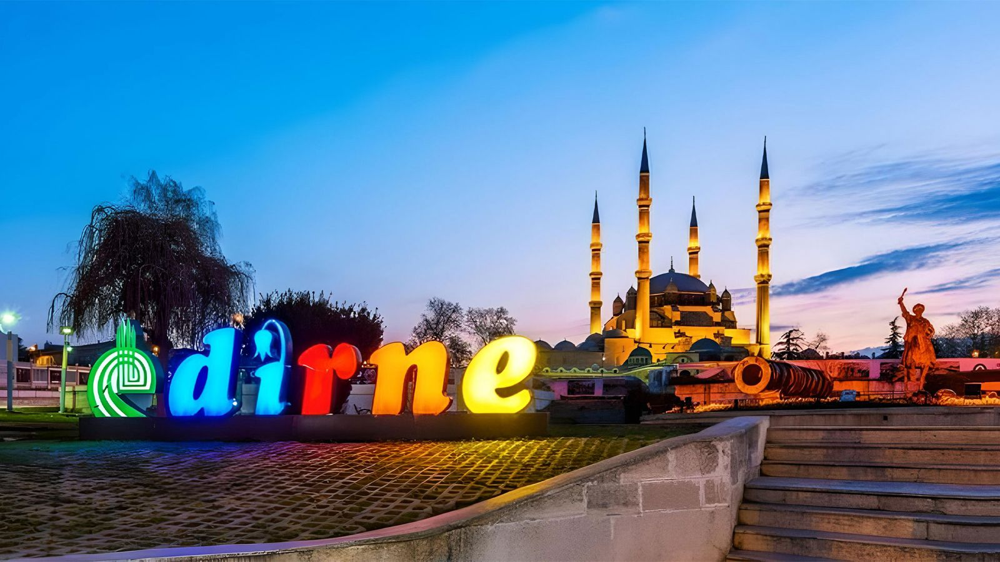
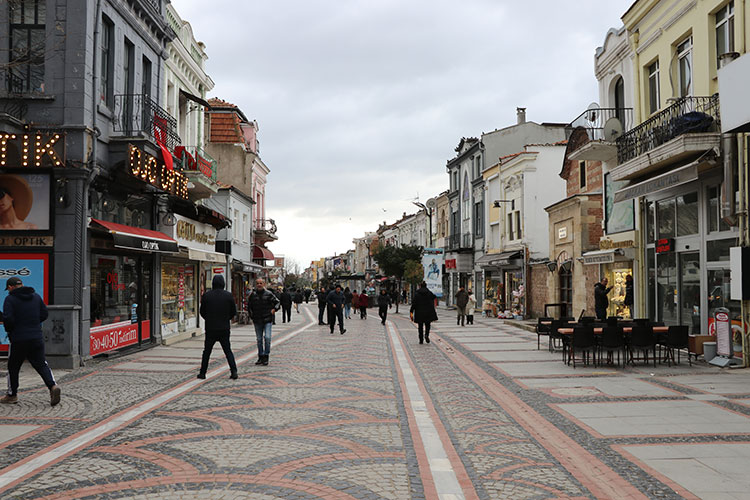
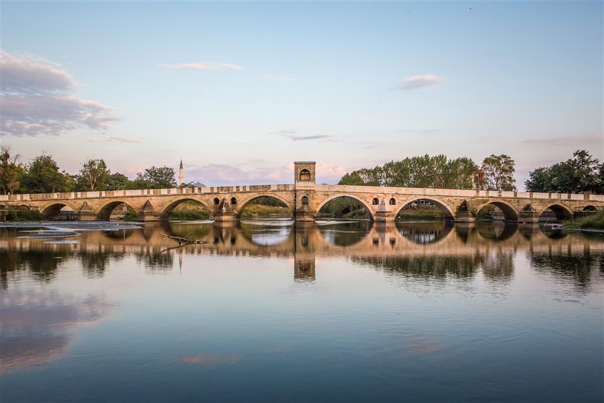

Memleketim: Edirne
Genel Bilgiler
Nüfus: Yaklaşık 430.000
Türkiye'nin Avrupa'ya açılan kapısı olan Edirne, tarihi dokusu, eşsiz mimarisi ve kültürel zenginlikleriyle öne çıkan kadim bir şehirdir. Osmanlı İmparatorluğu'na başkentlik yapmış bu güzel şehir, her köşesinde tarihten bir iz taşır.
Gezilecek Yerler
- Selimiye Camii (Mimar Sinan'ın Ustalık Eseri)
- Saraçlar Caddesi
- Uzunköprü
- Karaağaç Eski Tren Garı
- II. Bayezid Külliyesi Sağlık Müzesi
- Eski Cami (Ulu Cami)
- Ali Paşa Çarşısı
- Rüstem Paşa Kervansarayı


